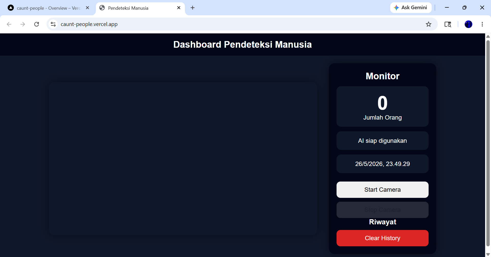
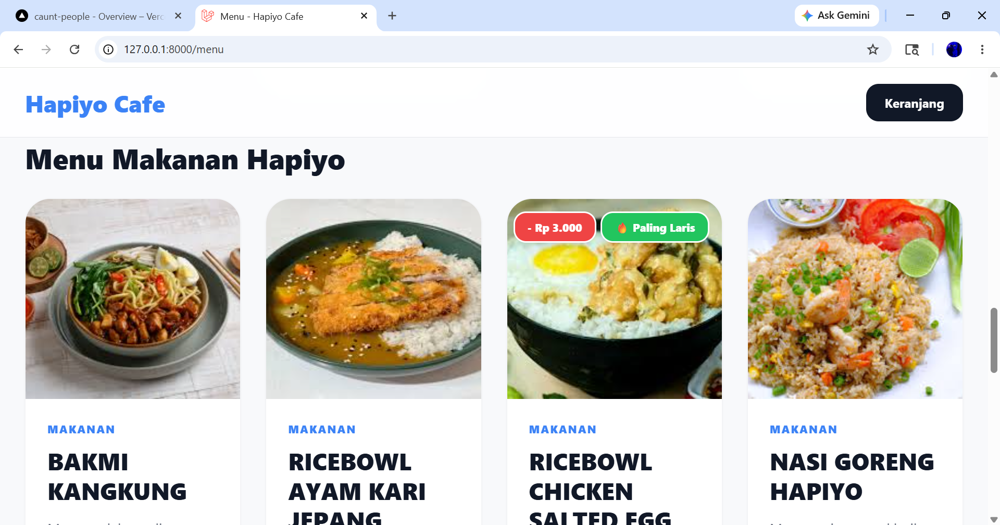
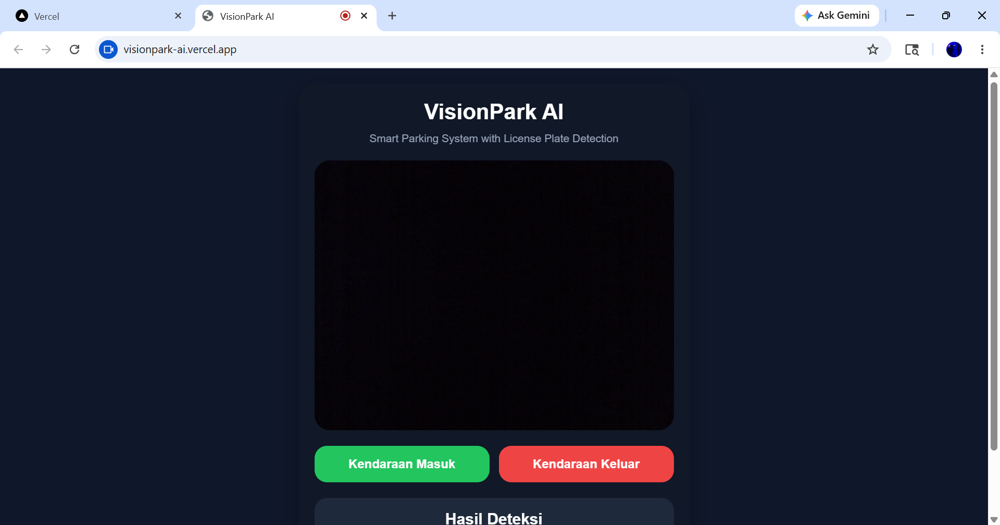
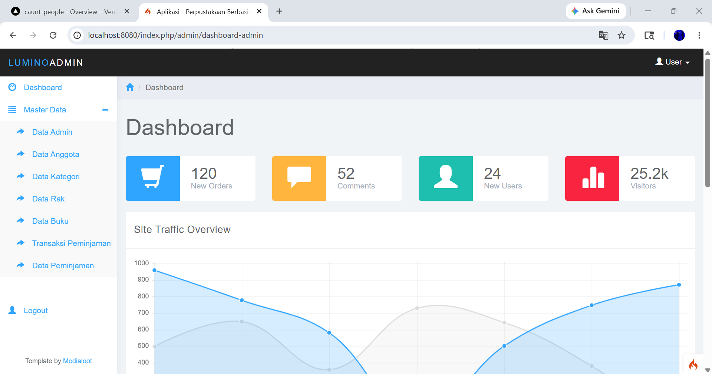
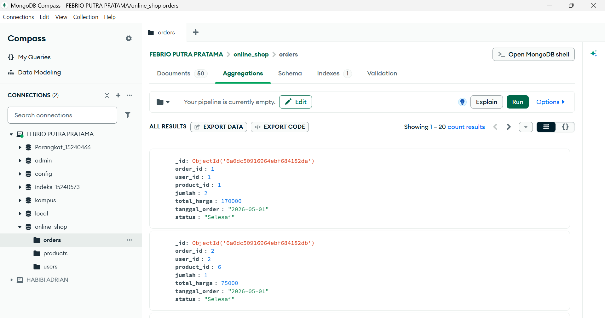

AI Pendeteksi Manusia
Sistem deteksi manusia realtime berbasis website menggunakan webcam, TensorFlow.js, dan COCO-SSD.
Mahasiswa Teknik Informatika
Saya membangun project web, database, dan artificial intelligence sebagai bagian dari proses belajar dan pengembangan skill di bidang teknologi.
Fokus pada pengembangan aplikasi berbasis web, sistem informasi, database, dan penerapan AI sederhana berbasis JavaScript.
Skill
Project

Sistem deteksi manusia realtime berbasis website menggunakan webcam, TensorFlow.js, dan COCO-SSD.

Aplikasi coffee shop berbasis Laravel dengan fitur menu, keranjang, order, admin, dan kasir.

Project OCR untuk membaca plat nomor kendaraan berbasis kamera, JavaScript, dan Supabase.

Aplikasi perpustakaan berbasis CodeIgniter 4 untuk mengelola data buku dan transaksi.

Project database MongoDB dengan collection, aggregation pipeline, lookup, dan insight data.
Kumpulan desain landing page modern untuk presentasi project kampus dan website sederhana.
Kontak
Hubungi saya untuk kolaborasi, tugas kuliah, atau pengembangan website.